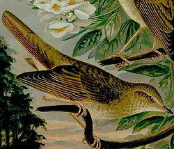
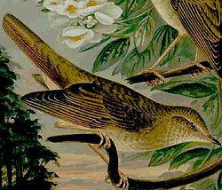

| Thrush Nightingale | |
|---|---|
|  | |
| Conservation status | |
| Binomial name | |
| Luscinia luscinia (Linnaeus, 1758) |
| Thrush Nightingale | |
|---|---|
|  | |
| Conservation status | |
| Binomial name | |
| Luscinia luscinia (Linnaeus, 1758) |
The Thrush Nightingale, Luscinia luscinia (formerly colloquially known as Sprosser), is a small passerine bird that was formerly classed as a member of the thrush family Turdidae, but is now more generally considered to be an Old World flycatcher, Muscicapidae. It, and similar small European species, are often called chats.
It is a migratory insectivorous species breeding in forest in Europe and Asia. The distribution is more northerly than the very closely related Nightingale, Luscinia megarhynchos. It nests low in dense bushes. It winters in Africa.
The Thrush Nightingale is similar in size to the European Robin. It is plain grey brown above and grey to white below. Its greyer tones, giving a cloudy appearance to the underside, and lack of the Nightingale's obvious red tail side patches are the clearest plumage differences from that species. Sexes are similar.
The male's  song (help·info) is loud, with range of whistles, trills and clicks. It does not have the Nightingale's loud whistling crescendo.
song (help·info) is loud, with range of whistles, trills and clicks. It does not have the Nightingale's loud whistling crescendo.

{kind=link}